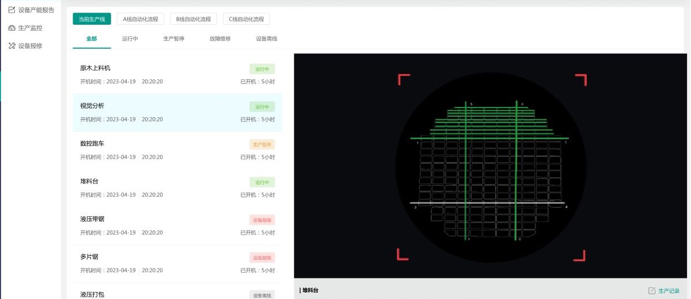

Plan production
See which orders are waiting, when they are scheduled, and how far they have progressed.
Timber production / Interface design
I designed a desktop system for the people running a timber production line. It brings order planning, machine status, maintenance, and reports into one place.
01 / Challenge
A manufacturing execution system, or MES, helps a factory team keep track of production. Orders move through the line, machines become available, and faults can interrupt the schedule. The team needs to see those changes as they happen.
I organised the screens around the tasks people do during a shift. Tables and schedules give an overview, colour makes machine status easy to spot, and detail panels let people look more closely at an order, machine, or fault.
See which orders are waiting, when they are scheduled, and how far they have progressed.
Check whether machines are running, how long they have been active, and where faults need attention.
Set up approvals and permissions to match how the factory team works.
02 / Interface

Open an order, machine, or fault from the production overview to see more detail.
The same labels and colours show whether equipment is running, paused, faulty, or offline.
Equipment images and inspection views help people see where a machine sits on the line.
03 / What I designed
Plan the production queue, check order details, and follow each order through the schedule.
Check the line and individual machines for progress, output, and interruptions.
Record faults, organise repairs, and keep a history for each machine.
Review reports and manage accounts, approvals, and the steps in each process.